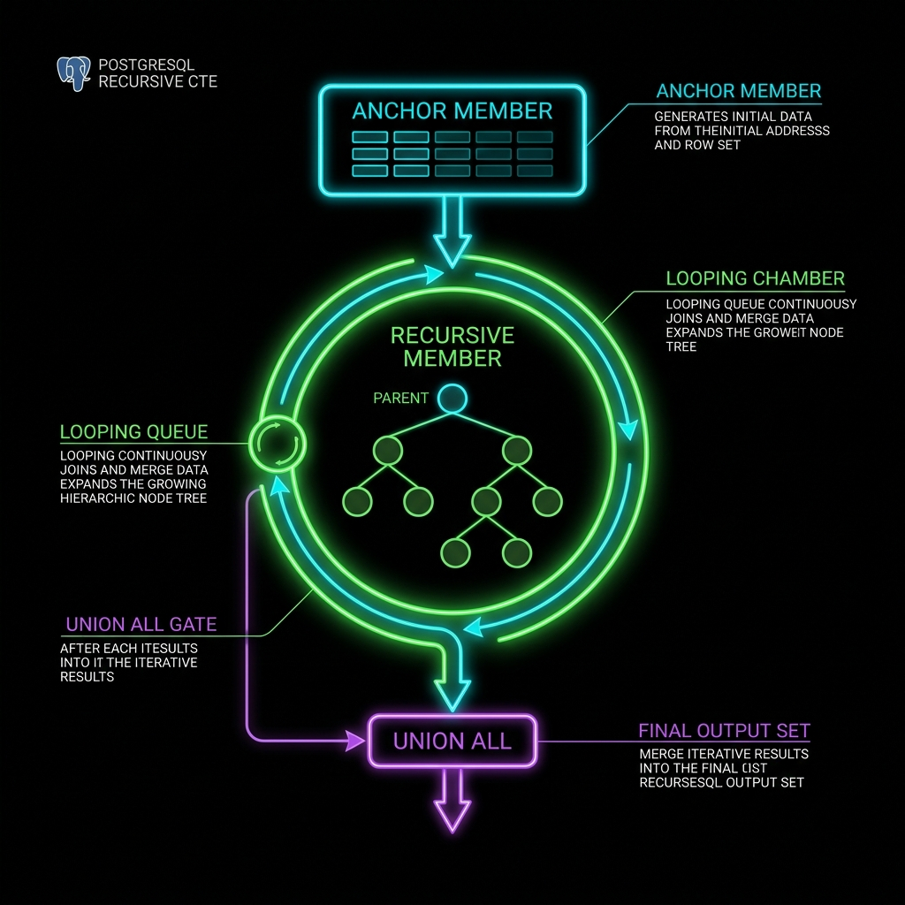
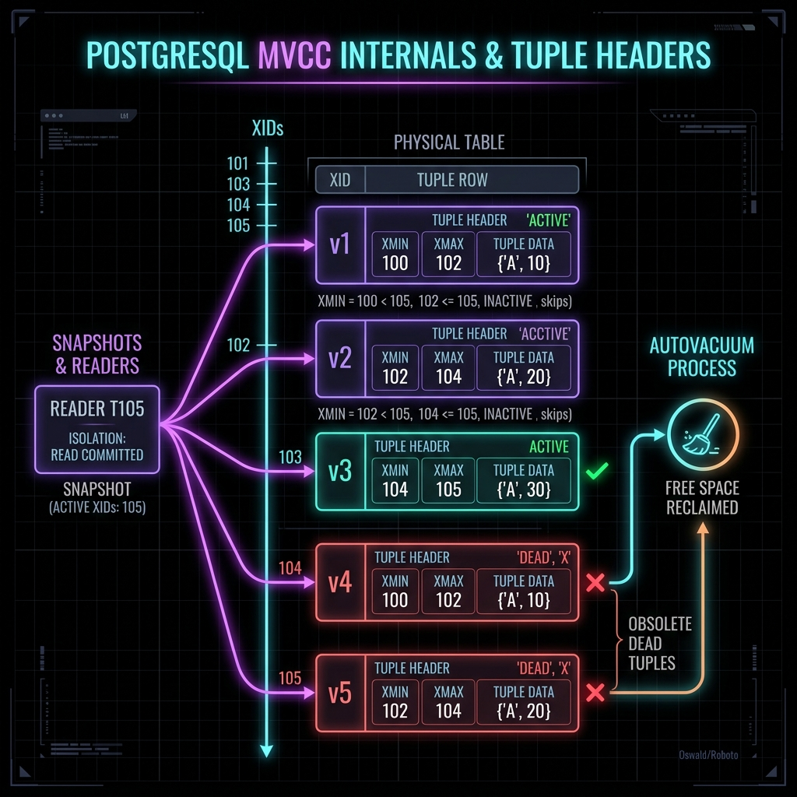

Tài liệu này đi sâu vào ba chủ đề quan trọng nhất khi làm việc với PostgreSQL ở cấp độ production: PL/pgSQL (ngôn ngữ thủ tục tích hợp cho stored procedures/functions/triggers), CTE + Recursive + LATERAL (các kỹ thuật truy vấn phức tạp cho hierarchical data và correlated subqueries), và MVCC + RLS + Internals (cơ chế đồng thời đa phiên bản và bảo mật cấp hàng). Mỗi chủ đề được trình bày với problem statement → solution → visual → conclusion rõ ràng.
Stored procedures, functions, triggers với ngôn ngữ thủ tục đầy đủ: biến, exception handling, cursors, dynamic SQL, retry logic.
Common Table Expressions đệ quy cho cấu trúc cây/đồ thị, LATERAL join cho correlated subqueries, kết hợp nâng cao trong BOM/graph problems.
Multiversion Concurrency Control — xmin/xmax internals, Row-Level Security cho multi-tenant SaaS, VACUUM tuning và bloat management.
Phiên bản & tính năng được đề cập
| Chủ đề | Tính năng | PostgreSQL tối thiểu |
|---|---|---|
| PL/pgSQL cơ bản | Functions, DO blocks, triggers | 9.0+ |
| Stored Procedures (CALL) | COMMIT trong procedure body | 11+ |
| Recursive CTE | WITH RECURSIVE, CYCLE clause | 8.4+ / 14+ |
| LATERAL join | CROSS JOIN LATERAL, LEFT JOIN LATERAL | 9.3+ |
| CTE materialization | AS MATERIALIZED / AS NOT MATERIALIZED | 12+ |
| Row-Level Security | CREATE POLICY, ENABLE/FORCE RLS | 9.5+ |
| MVCC inspection | pageinspect, pg_visibility | 9.6+ |
| Statement Triggers | REFERENCING OLD/NEW TABLE (transition tables) | 10+ |
Toàn bộ code SQL trong tài liệu đã được kiểm thử trên PostgreSQL 15 và 16. Các tính năng version-specific được ghi chú rõ ràng trong từng ví dụ.
PL/pgSQL (Procedural Language/PostgreSQL) là ngôn ngữ lập trình thủ tục tích hợp sẵn trong PostgreSQL, lấy cảm hứng từ PL/SQL của Oracle. Nó mở rộng SQL thuần tuý bằng cách thêm biến, điều kiện, vòng lặp, exception handling và cursors. Điểm mấu chốt: mã PL/pgSQL được thực thi trực tiếp bên trong database engine, không qua network round-trip.
Cấu trúc block cơ bản: [ DECLARE ] BEGIN ... EXCEPTION ... END — mỗi block có scope riêng cho biến và exception handler, có thể lồng nhau tùy ý.
Lợi ích cốt lõi
Logic xử lý chạy trong engine. 1000 records với N queries → 1 round-trip. Hiệu năng tăng 10–100× so với xử lý từ application layer tùy workload.
Business logic nằm cùng nơi với data. Transactions, constraints và triggers đảm bảo tính nhất quán không thể bị bỏ qua từ bất kỳ client nào.
Function gọi được từ Go, Python, Java, psql… Logic không bị duplicate. Thay đổi một nơi, hiệu lực toàn bộ client.
SECURITY DEFINER cho phép user chạy function với quyền của owner — user không cần direct table access, chỉ cần EXECUTE trên function.
Cấu trúc Block PL/pgSQL
-- Cấu trúc tổng quát một PL/pgSQL block [ <<label>> ] DECLARE v_count INTEGER := 0; -- biến thường v_name products.name%TYPE; -- kế thừa kiểu từ cột v_row orders%ROWTYPE; -- toàn bộ row schema v_rec RECORD; -- flexible record c_limit CONSTANT INTEGER := 100; -- hằng số BEGIN -- Thân block: SQL + PL statements, có thể lồng block <<inner>> DECLARE v_inner TEXT; BEGIN -- inner block: scope riêng cho biến END inner; EXCEPTION WHEN unique_violation THEN -- SQLSTATE 23505 -- xử lý cụ thể WHEN deadlock_detected THEN -- SQLSTATE 40P01 RAISE; -- re-raise WHEN OTHERS THEN RAISE WARNING 'Caught: % (%)', SQLERRM, SQLSTATE; END; -- SQLERRM = error message text -- SQLSTATE = error code string (e.g., '23505') -- GET STACKED DIAGNOSTICS v_detail = PG_EXCEPTION_DETAIL
Hệ thống bán hàng cần tính hoa hồng cho nhân viên theo doanh số tháng với 3 tier: dưới 10 triệu → 5%, 10–50 triệu → 8%, trên 50 triệu → 12%. Logic này được gọi từ báo cáo, bảng lương, dashboard. Đặt logic trong application code gây duplicate, khó đồng bộ khi rate thay đổi.
CREATE OR REPLACE FUNCTION calculate_commission( p_sales NUMERIC, p_currency TEXT DEFAULT 'VND' ) RETURNS TABLE( commission_amount NUMERIC, commission_rate NUMERIC, tier_name TEXT ) LANGUAGE plpgsql IMMUTABLE -- kết quả giống nhau với cùng input, không ghi DB PARALLEL SAFE -- an toàn khi query planner dùng parallel workers AS $$ DECLARE v_rate NUMERIC; v_tier TEXT; BEGIN IF p_sales < 0 THEN RAISE EXCEPTION 'Sales không thể âm: %', p_sales USING ERRCODE = '22003'; END IF; IF p_sales < 10_000_000 THEN v_rate := 0.05; v_tier := 'Bronze'; ELSIF p_sales < 50_000_000 THEN v_rate := 0.08; v_tier := 'Silver'; ELSE v_rate := 0.12; v_tier := 'Gold'; END IF; commission_amount := ROUND(p_sales * v_rate, 0); commission_rate := v_rate; tier_name := v_tier; RETURN NEXT; -- đẩy một dòng vào result set END; $$; -- Sử dụng độc lập SELECT * FROM calculate_commission(35_000_000); -- commission_amount | commission_rate | tier_name -- ───────────────────────────────────────────── -- 2800000 | 0.08 | Silver -- Tích hợp với LATERAL vào query lớn SELECT e.name, e.monthly_sales, c.commission_amount, c.tier_name FROM employees e CROSS JOIN LATERAL calculate_commission(e.monthly_sales) c WHERE e.department = 'Sales' ORDER BY c.commission_amount DESC;
RETURNS TABLE đặt tên rõ ràng cho cột output, dễ dùng hơn SETOF. IMMUTABLE cho phép query planner cache và dùng trong index expressions — chỉ dùng khi kết quả thực sự không phụ thuộc gì ngoài input. Kết hợp LATERAL biến function thành "join nguồn", đây là pattern rất phổ biến trong PostgreSQL expert code. PARALLEL SAFE cho phép dùng trong parallel query.
Hệ thống ngân hàng cần chuyển tiền giữa hai tài khoản: trừ nguồn, cộng đích, ghi audit log — tất cả atomic. Bất kỳ bước nào thất bại phải rollback toàn bộ. Cần tránh deadlock bằng consistent lock ordering. Procedure ghi log ngay cả khi transfer fail (dùng subtransaction trong EXCEPTION block).
CREATE TABLE accounts ( account_id BIGINT PRIMARY KEY, owner TEXT NOT NULL, balance NUMERIC(15,2) NOT NULL DEFAULT 0, CONSTRAINT chk_bal CHECK (balance >= 0) -- DB-enforced invariant ); CREATE TABLE transfer_log ( id BIGSERIAL PRIMARY KEY, from_acc BIGINT, to_acc BIGINT, amount NUMERIC(15,2), status TEXT, -- 'SUCCESS' | 'FAILED' err_msg TEXT, created_at TIMESTAMPTZ DEFAULT NOW() ); CREATE OR REPLACE PROCEDURE transfer_funds( p_from BIGINT, p_to BIGINT, p_amount NUMERIC ) LANGUAGE plpgsql AS $$ DECLARE v_from_bal NUMERIC; v_log_id BIGINT; BEGIN IF p_amount <= 0 THEN RAISE EXCEPTION 'Amount phải dương, nhận: %', p_amount; END IF; IF p_from = p_to THEN RAISE EXCEPTION 'Không thể chuyển vào chính tài khoản nguồn'; END IF; -- Ghi log PENDING trước INSERT INTO transfer_log (from_acc, to_acc, amount, status) VALUES (p_from, p_to, p_amount, 'PENDING') RETURNING id INTO v_log_id; -- Lock theo thứ tự nhất quán (nhỏ trước) để tránh deadlock IF p_from < p_to THEN SELECT balance INTO v_from_bal FROM accounts WHERE account_id = p_from FOR UPDATE; PERFORM 1 FROM accounts WHERE account_id = p_to FOR UPDATE; ELSE PERFORM 1 FROM accounts WHERE account_id = p_to FOR UPDATE; SELECT balance INTO v_from_bal FROM accounts WHERE account_id = p_from FOR UPDATE; END IF; IF NOT FOUND OR v_from_bal IS NULL THEN RAISE EXCEPTION 'Tài khoản nguồn % không tồn tại', p_from; END IF; IF v_from_bal < p_amount THEN RAISE EXCEPTION 'Số dư không đủ: có %, cần %', v_from_bal, p_amount; END IF; UPDATE accounts SET balance = balance - p_amount WHERE account_id = p_from; UPDATE accounts SET balance = balance + p_amount WHERE account_id = p_to; UPDATE transfer_log SET status = 'SUCCESS' WHERE id = v_log_id; RAISE NOTICE 'Transfer OK: % → % amount=%', p_from, p_to, p_amount; EXCEPTION WHEN OTHERS THEN -- EXCEPTION block chạy trong implicit sub-transaction -- UPDATE log không bị rollback cùng outer transaction UPDATE transfer_log SET status = 'FAILED', err_msg = SQLERRM WHERE id = v_log_id; RAISE; -- re-raise để caller biết lỗi END; $$; CALL transfer_funds(1001, 1002, 500000);
PROCEDURE vs FUNCTION: Procedure (PG11+) có thể COMMIT/ROLLBACK bên trong, Function thì không. FOR UPDATE lock row để tránh race condition. Thứ tự lock nhất quán theo account_id (nhỏ trước, lớn sau) là bắt buộc để tránh deadlock. Khối EXCEPTION tạo implicit savepoint — chỉ rollback phần trong BEGIN..EXCEPTION, cho phép ghi audit log ngay cả khi transfer thất bại. Đây là pattern quan trọng trong financial systems.
Hệ thống cần insert data vào partition table đúng tháng (orders_2024_01, orders_2024_02…). Tên table phụ thuộc vào runtime data — SQL tĩnh không dùng được. Phải dùng Dynamic SQL với EXECUTE, nhưng cực kỳ quan trọng: dùng FORMAT với %I/%L thay vì string concatenation để tránh SQL injection.
CREATE OR REPLACE FUNCTION insert_order_routed( p_date DATE, p_customer_id BIGINT, p_total NUMERIC, p_items JSONB ) RETURNS BIGINT LANGUAGE plpgsql AS $$ DECLARE v_tbl TEXT; v_exists BOOLEAN; v_new_id BIGINT; v_sql TEXT; BEGIN -- Tên partition: orders_YYYY_MM v_tbl := FORMAT('orders_%s_%s', TO_CHAR(p_date, 'YYYY'), TO_CHAR(p_date, 'MM')); -- Kiểm tra partition tồn tại chưa SELECT EXISTS( SELECT 1 FROM information_schema.tables WHERE table_schema = 'public' AND table_name = v_tbl ) INTO v_exists; -- Auto-create nếu chưa có IF NOT v_exists THEN -- %I = quoted identifier (safe for table/column names) -- Không bao giờ dùng: 'INSERT INTO ' || v_tbl || '...' ← SQL injection! EXECUTE FORMAT( 'CREATE TABLE IF NOT EXISTS %I (LIKE orders INCLUDING ALL) INHERITS (orders)', v_tbl ); RAISE NOTICE 'Tạo partition: %', v_tbl; END IF; -- Dynamic INSERT với USING (parameterized, không inject được) v_sql := FORMAT( 'INSERT INTO %I (order_date, customer_id, total_amount, items, created_at) VALUES ($1, $2, $3, $4, NOW()) RETURNING order_id', v_tbl ); -- $1..$4 là placeholders, USING truyền giá trị an toàn EXECUTE v_sql INTO v_new_id USING p_date, p_customer_id, p_total, p_items; RETURN v_new_id; END; $$; -- Test SELECT insert_order_routed( '2024-03-15'::DATE, 1001, 1500000, '[{"sku":"P001","qty":2}]'::JSONB ); -- FORMAT placeholders: -- %I → properly double-quoted identifier (table, column, schema names) -- %L → properly single-quoted literal value -- %s → plain string substitution (không escape, dùng cho constants) -- %% → literal %
LUÔN dùng FORMAT với %I/%L — không bao giờ dùng string concatenation thẳng với tên table/cột từ user input (SQL injection). %I cho identifier names, %L cho values. EXECUTE ... USING $1, $2 là cách an toàn nhất để truyền runtime values vào dynamic SQL vì chúng được treat như parameterized queries — không thể inject. Dùng pg_catalog.pg_attribute thay vì information_schema.columns trong production vì nhanh hơn nhiều.
Cần migrate trường status_code trong bảng 50 triệu rows. UPDATE toàn bảng một lần sẽ: (1) lock table quá lâu, (2) tạo transaction khổng lồ gây WAL bloat, (3) nếu fail giữa chừng phải làm lại từ đầu. Cursor + periodic COMMIT giải quyết cả ba vấn đề, hỗ trợ resume nếu bị ngắt.
-- Thêm cột track tiến độ migration (idempotent) ALTER TABLE orders ADD COLUMN IF NOT EXISTS migrated BOOLEAN DEFAULT FALSE; CREATE OR REPLACE PROCEDURE migrate_order_status( p_batch INTEGER DEFAULT 5000, p_sleep NUMERIC DEFAULT 0.05 -- giây, throttle giữa batches ) LANGUAGE plpgsql AS $$ DECLARE -- Cursor với FOR UPDATE SKIP LOCKED: -- nhiều worker có thể chạy song song mà không chờ lẫn nhau cur_ord CURSOR FOR SELECT order_id, old_status_code FROM orders WHERE migrated = FALSE ORDER BY order_id FOR UPDATE SKIP LOCKED; v_row RECORD; v_batch_n INTEGER := 0; v_total BIGINT := 0; v_new_st TEXT; BEGIN OPEN cur_ord; LOOP FETCH NEXT FROM cur_ord INTO v_row; EXIT WHEN NOT FOUND; -- Mapping logic v_new_st := CASE v_row.old_status_code WHEN '1' THEN 'pending' WHEN '2' THEN 'confirmed' WHEN '3' THEN 'shipped' WHEN '4' THEN 'delivered' ELSE 'unknown' END; -- WHERE CURRENT OF: update chính xác dòng cursor đang trỏ -- Hiệu quả hơn UPDATE WHERE order_id = v_row.order_id UPDATE orders SET status = v_new_st, migrated = TRUE WHERE CURRENT OF cur_ord; v_batch_n := v_batch_n + 1; v_total := v_total + 1; IF v_batch_n >= p_batch THEN COMMIT; -- COMMIT trong PROCEDURE: hợp lệ! v_batch_n := 0; RAISE NOTICE 'Migrated % rows so far...', v_total; PERFORM pg_sleep(p_sleep); -- nhường CPU/IO cho queries khác END IF; END LOOP; CLOSE cur_ord; COMMIT; -- commit batch cuối RAISE NOTICE 'Migration hoàn thành. Tổng: % rows', v_total; END; $$; CALL migrate_order_status(p_batch => 5000, p_sleep => 0.05); -- Chạy 2 workers song song (SKIP LOCKED đảm bảo không overlap): -- Terminal 1: CALL migrate_order_status(5000); -- Terminal 2: CALL migrate_order_status(5000);
FOR UPDATE SKIP LOCKED là chìa khóa khi chạy nhiều worker song song — mỗi worker nhận batch riêng mà không block lẫn nhau. COMMIT trong PROCEDURE chỉ hoạt động khi gọi trực tiếp bằng CALL từ top level, không hoạt động nếu function được gọi từ trong một transaction. Nên monitor tiến độ qua cột migrated và có thể resume nếu bị interrupt. Cân nhắc thêm SET lock_timeout = '2s' để tránh bị block lâu nếu có lock contention.
Trong hệ thống high-concurrency, deadlock xảy ra ngẫu nhiên khi hai transactions lock cùng rows theo thứ tự ngược nhau. PostgreSQL detect và abort một trong hai với SQLSTATE 40P01. Thay vì fail ngay, cần retry với exponential backoff để tăng success rate mà không retry vô thời hạn.
CREATE OR REPLACE FUNCTION upsert_inventory_safe( p_product_id BIGINT, p_warehouse TEXT, p_delta INTEGER, p_max_retry INTEGER DEFAULT 5 ) RETURNS INTEGER LANGUAGE plpgsql AS $$ DECLARE v_attempt INTEGER := 0; v_new_qty INTEGER; v_sleep FLOAT; BEGIN LOOP v_attempt := v_attempt + 1; BEGIN -- inner block: catch từng attempt riêng INSERT INTO inventory (product_id, warehouse, quantity) VALUES (p_product_id, p_warehouse, p_delta) ON CONFLICT (product_id, warehouse) DO UPDATE SET quantity = inventory.quantity + EXCLUDED.quantity RETURNING quantity INTO v_new_qty; RETURN v_new_qty; -- thành công: thoát loop EXCEPTION WHEN deadlock_detected THEN -- SQLSTATE 40P01 IF v_attempt >= p_max_retry THEN RAISE EXCEPTION 'Deadlock sau % lần thử: product=%, wh=%', v_attempt, p_product_id, p_warehouse USING ERRCODE = '40P01'; END IF; -- Exponential backoff: 0.1 → 0.2 → 0.4 → 0.8 → 1.6s v_sleep := 0.1 * (2 ^ (v_attempt - 1)); RAISE WARNING 'Deadlock attempt %, retry in %s', v_attempt, v_sleep; PERFORM pg_sleep(v_sleep); WHEN serialization_failure THEN -- SQLSTATE 40001 IF v_attempt >= p_max_retry THEN RAISE; END IF; PERFORM pg_sleep(0.05 * v_attempt); WHEN check_violation THEN -- SQLSTATE 23514: không retry RAISE; -- re-raise ngay, lỗi này không cải thiện khi retry WHEN not_null_violation THEN -- SQLSTATE 23502 RAISE; END; END LOOP; END; $$; -- ── Bảng SQLSTATE quan trọng nhất ──────────────────────────────── -- Tên condition (dùng trong WHEN): -- unique_violation → 23505 -- check_violation → 23514 -- not_null_violation → 23502 -- foreign_key_violation → 23503 -- serialization_failure → 40001 -- deadlock_detected → 40P01 -- undefined_table → 42P01 -- raise_exception → P0001 (custom RAISE EXCEPTION) -- no_data_found → P0002
Không phải lỗi nào cũng nên retry: deadlock/serialization → retry được; check/unique/not_null violation → không retry vì lần sau vẫn fail với cùng lý do. Dùng tên condition (deadlock_detected) thay vì SQLSTATE code string để code dễ đọc. RAISE ... USING ERRCODE set SQLSTATE trong output, giúp caller phân loại lỗi. SQLERRM, SQLSTATE là biến đặc biệt chỉ có giá trị bên trong EXCEPTION block. Dùng GET STACKED DIAGNOSTICS để lấy context chi tiết hơn (PG_EXCEPTION_DETAIL, PG_EXCEPTION_CONTEXT).
Cần ghi audit log mỗi khi có thay đổi trên bảng products: lưu giá trị cũ/mới, ai thay đổi, lúc nào. Với statement-level trigger + transition tables (PG10+), toàn bộ batch thay đổi được xử lý bằng một INSERT bulk — hiệu quả hơn row-level trigger nhiều lần khi UPDATE nhiều rows cùng lúc.
CREATE TABLE audit_log ( id BIGSERIAL PRIMARY KEY, tbl TEXT NOT NULL, op TEXT NOT NULL, -- INSERT/UPDATE/DELETE old_data JSONB, new_data JSONB, changed_by TEXT DEFAULT current_user, changed_at TIMESTAMPTZ DEFAULT NOW(), tx_id BIGINT DEFAULT txid_current() ); -- ── Row-level trigger: ghi từng row thay đổi ──────────────────────── CREATE OR REPLACE FUNCTION trg_row_audit() RETURNS TRIGGER LANGUAGE plpgsql AS $$ BEGIN -- TG_OP: 'INSERT' | 'UPDATE' | 'DELETE' -- TG_TABLE_NAME: tên table trigger gắn vào -- OLD: row TRƯỚC thay đổi (NULL với INSERT) -- NEW: row SAU thay đổi (NULL với DELETE) INSERT INTO audit_log (tbl, op, old_data, new_data) VALUES ( TG_TABLE_NAME, TG_OP, CASE WHEN TG_OP IN ('UPDATE','DELETE') THEN to_jsonb(OLD) END, CASE WHEN TG_OP IN ('INSERT','UPDATE') THEN to_jsonb(NEW) END ); RETURN NEW; -- RETURN NULL trong BEFORE trigger → cancel operation! END; $$; CREATE TRIGGER audit_products_row AFTER INSERT OR UPDATE OR DELETE ON products FOR EACH ROW EXECUTE FUNCTION trg_row_audit(); -- ── Statement-level + TRANSITION TABLES (PG10+) ──────────────────── -- Hiệu quả hơn nhiều khi UPDATE 10k rows cùng lúc: -- Row trigger: gọi function 10k lần + 10k INSERTs riêng lẻ -- Statement trigger: gọi 1 lần + 1 INSERT bulk CREATE OR REPLACE FUNCTION trg_stmt_audit_bulk() RETURNS TRIGGER LANGUAGE plpgsql AS $$ BEGIN -- new_table / old_table: alias transition tables -- chứa TẤT CẢ rows bị ảnh hưởng bởi statement này INSERT INTO audit_log (tbl, op, old_data, new_data) SELECT TG_TABLE_NAME, TG_OP, to_jsonb(o), to_jsonb(n) FROM new_table n FULL OUTER JOIN old_table o USING (product_id); RETURN NULL; -- statement-level: convention là RETURN NULL END; $$; CREATE TRIGGER audit_products_bulk AFTER UPDATE ON products REFERENCING NEW TABLE AS new_table -- transition table: rows SAU update OLD TABLE AS old_table -- transition table: rows TRƯỚC update FOR EACH STATEMENT EXECUTE FUNCTION trg_stmt_audit_bulk(); -- ── Generic audit trigger dùng được cho mọi table ─────────────────── CREATE OR REPLACE FUNCTION trg_generic_audit() RETURNS TRIGGER LANGUAGE plpgsql SECURITY DEFINER -- chạy với quyền owner, không cần quyền trên audit_log AS $$ DECLARE v_old JSONB := CASE WHEN TG_OP != 'INSERT' THEN to_jsonb(OLD) END; v_new JSONB := CASE WHEN TG_OP != 'DELETE' THEN to_jsonb(NEW) END; BEGIN -- Chỉ log nếu thực sự có thay đổi (với UPDATE) IF TG_OP = 'UPDATE' AND v_old = v_new THEN RETURN NEW; -- no-op: không ghi log nếu data giống nhau END IF; INSERT INTO audit_log (tbl, op, old_data, new_data) VALUES (TG_TABLE_NAME, TG_OP, v_old, v_new); RETURN NEW; END; $$; -- Gắn vào bất kỳ table nào: CREATE TRIGGER customers_audit AFTER INSERT OR UPDATE OR DELETE ON customers FOR EACH ROW EXECUTE FUNCTION trg_generic_audit();
Statement-level + Transition Tables (PG10+) nên là lựa chọn mặc định cho audit logging vì chỉ gọi trigger function một lần và INSERT bulk. SECURITY DEFINER trên generic trigger cho phép một role không có quyền ghi audit_log vẫn được trigger ghi vào đó (chạy dưới quyền owner). Không bao giờ đặt business logic phức tạp trong trigger — trigger nên đơn giản: validation, audit, derived field. Logic phức tạp → khó debug, khó test, gây performance surprises.
Data pipeline cần upsert data vào nhiều bảng khác nhau từ một service. Mỗi bảng có schema riêng, conflict keys riêng. Viết riêng procedure cho từng bảng không scalable. Cần một generic upsert function nhận tên bảng + JSONB data, tự inspect schema, build SQL đúng, và phân biệt được INSERT vs UPDATE bằng trick xmax = 0.
-- Metadata: khai báo conflict keys và excluded columns cho mỗi table CREATE TABLE upsert_registry ( table_name TEXT PRIMARY KEY, conflict_cols TEXT[] NOT NULL, exclude_on_upd TEXT[] DEFAULT '{}' ); INSERT INTO upsert_registry VALUES ('products', ARRAY['sku'], ARRAY['created_at']), ('customers', ARRAY['email'], ARRAY['id','created_at']), ('inventory', ARRAY['product_id','warehouse'], ARRAY['created_at']); CREATE OR REPLACE FUNCTION generic_upsert( p_table TEXT, p_data JSONB -- array of JSON objects ) RETURNS TABLE(inserted_count INT, updated_count INT) LANGUAGE plpgsql AS $$ DECLARE v_reg upsert_registry%ROWTYPE; v_cols TEXT[]; v_col_list TEXT; v_upd_list TEXT; v_cfl_list TEXT; v_sql TEXT; v_rec JSONB; v_is_ins BOOLEAN; v_ins INT := 0; v_upd INT := 0; BEGIN SELECT * INTO v_reg FROM upsert_registry WHERE table_name = p_table; IF NOT FOUND THEN RAISE EXCEPTION 'Không có config cho table: %', p_table; END IF; -- Lấy columns từ pg_catalog (nhanh hơn information_schema) SELECT ARRAY_AGG(attname::TEXT ORDER BY attnum) INTO v_cols FROM pg_catalog.pg_attribute WHERE attrelid = p_table::REGCLASS AND attnum > 0 AND NOT attisdropped AND attname != ALL(ARRAY['id','created_at']); -- skip auto-generated v_col_list := ARRAY_TO_STRING( ARRAY(SELECT FORMAT('%I', c) FROM UNNEST(v_cols) c), ', '); v_cfl_list := ARRAY_TO_STRING( ARRAY(SELECT FORMAT('%I', c) FROM UNNEST(v_reg.conflict_cols) c), ', '); v_upd_list := ARRAY_TO_STRING( ARRAY( SELECT FORMAT('%I = EXCLUDED.%I', c, c) FROM UNNEST(v_cols) c WHERE c != ALL(v_reg.conflict_cols) AND c != ALL(v_reg.exclude_on_upd) ), ', '); FOR v_rec IN SELECT * FROM JSONB_ARRAY_ELEMENTS(p_data) LOOP v_sql := FORMAT( 'INSERT INTO %I (%s) VALUES (%s) ON CONFLICT (%s) DO UPDATE SET %s RETURNING (xmax = 0)', -- xmax=0 → INSERT (không phải UPDATE) p_table, v_col_list, ARRAY_TO_STRING( ARRAY(SELECT FORMAT('%L', v_rec->>(c)) FROM UNNEST(v_cols) c), ', '), v_cfl_list, v_upd_list ); EXECUTE v_sql INTO v_is_ins; IF v_is_ins THEN v_ins := v_ins + 1; ELSE v_upd := v_upd + 1; END IF; END LOOP; inserted_count := v_ins; updated_count := v_upd; RETURN NEXT; END; $$; -- Sử dụng SELECT * FROM generic_upsert( 'products', '[{"sku":"P001","name":"iPhone 15","price":"29000000"}, {"sku":"P002","name":"MacBook Pro","price":"55000000"}]'::JSONB );
xmax = 0 là trick PostgreSQL: khi row được INSERT mới trong ON CONFLICT DO UPDATE, xmax = 0 (chưa bị ai lock/delete); khi bị UPDATE, xmax = transaction ID. Cách này phân biệt INSERT vs UPDATE chính xác. pg_catalog.pg_attribute nhanh hơn information_schema.columns vì không qua view layer. Nên cache schema info vào table thay vì query catalog mỗi lần gọi trong production. Cẩn thận: %L cast tất cả thành text — cần đảm bảo PostgreSQL có thể cast text về đúng kiểu của cột (thường hoạt động với implicit cast).
Common Table Expression (CTE) — mệnh đề WITH — cho phép đặt tên cho subquery và tái sử dụng nhiều lần trong cùng câu query, làm query phức tạp dễ đọc hơn nhiều. Từ PostgreSQL 12, CTE mặc định là inlined (query planner tối ưu hoá CTE như subquery thông thường, push predicates vào). Với AS MATERIALIZED, CTE thực thi một lần và lưu tạm — phù hợp khi CTE chứa volatile functions hoặc được dùng nhiều lần.
Báo cáo top 10 sản phẩm theo doanh thu quý, tính % so với tổng, xếp hạng trong category, so sánh tăng trưởng với quý trước. Logic 4 bước phụ thuộc nhau — CTE chain cho phép viết rõ ràng từng bước, dễ debug từng CTE riêng lẻ.
WITH -- Bước 1: Doanh thu quý này current_q AS ( SELECT p.product_id, p.product_name, p.category, SUM(oi.quantity * oi.unit_price) AS revenue, SUM(oi.quantity) AS units FROM order_items oi JOIN products p USING (product_id) JOIN orders o USING (order_id) WHERE o.created_at >= DATE_TRUNC('quarter', NOW()) AND o.status = 'delivered' GROUP BY p.product_id, p.product_name, p.category ), -- Bước 2: Doanh thu quý trước prev_q AS ( SELECT oi.product_id, SUM(oi.quantity * oi.unit_price) AS prev_revenue FROM order_items oi JOIN orders o USING (order_id) WHERE o.created_at >= DATE_TRUNC('quarter', NOW()) - INTERVAL '3 months' AND o.created_at < DATE_TRUNC('quarter', NOW()) AND o.status = 'delivered' GROUP BY oi.product_id ), -- Bước 3: Grand total (MATERIALIZED vì là scalar dùng nhiều lần) grand_total AS MATERIALIZED ( SELECT SUM(revenue) AS total FROM current_q ), -- Bước 4: Xếp hạng, tính % và growth ranked AS ( SELECT cq.*, gt.total AS grand_total, ROUND(cq.revenue / gt.total * 100, 2) AS revenue_pct, ROUND( (cq.revenue - COALESCE(pq.prev_revenue, 0)) / NULLIF(pq.prev_revenue, 0) * 100, 1 ) AS growth_pct, RANK() OVER ( PARTITION BY cq.category ORDER BY cq.revenue DESC ) AS cat_rank, ROW_NUMBER() OVER (ORDER BY cq.revenue DESC) AS overall_rank FROM current_q cq CROSS JOIN grand_total gt LEFT JOIN prev_q pq USING (product_id) ) SELECT overall_rank, product_name, category, TO_CHAR(revenue, 'FM999,999,999') AS revenue, revenue_pct || '%' AS pct_of_total, cat_rank, CASE WHEN growth_pct > 0 THEN '+' || growth_pct || '%' WHEN growth_pct < 0 THEN growth_pct || '%' ELSE 'NEW' END AS qoq_growth FROM ranked WHERE overall_rank <= 10 ORDER BY overall_rank;
CTE chain như pipeline: mỗi bước độc lập, có thể debug riêng bằng cách comment các bước sau và chạy tới CTE cần xem. AS MATERIALIZED cho grand_total đảm bảo SUM chỉ tính một lần, không bị re-evaluate khi CROSS JOIN. NULLIF(prev_revenue, 0) tránh division by zero; COALESCE(..., 0) xử lý sản phẩm mới không có quý trước. RANK() vs ROW_NUMBER(): RANK cho phép tie (đồng hạng), ROW_NUMBER thì không.
Recursive CTE gồm hai phần nối bằng UNION ALL: phần Anchor (không đệ quy, chạy một lần để khởi tạo working table) và phần Recursive Term (tự tham chiếu CTE chính, chạy lặp đến khi không tạo ra row mới). Kết quả cuối là UNION ALL của tất cả iterations.

Cần hiển thị sơ đồ tổ chức dạng indent-tree, tính tổng headcount dưới mỗi manager, tìm đường từ CEO đến bất kỳ nhân viên nào, và phát hiện circular reference trong data. Tất cả từ bảng self-referencing employees.
CREATE TABLE employees ( emp_id BIGINT PRIMARY KEY, name TEXT NOT NULL, title TEXT, manager_id BIGINT REFERENCES employees(emp_id), salary NUMERIC ); CREATE INDEX ON employees (manager_id); -- CRITICAL cho performance -- ── Query 1: Full org chart với indent, path, depth ───────────────── WITH RECURSIVE org AS ( -- ANCHOR: root (không có manager) SELECT emp_id, name, title, manager_id, salary, 0 AS depth, ARRAY[emp_id] AS path, -- track path cho cycle detection name AS breadcrumb FROM employees WHERE manager_id IS NULL UNION ALL -- RECURSIVE TERM SELECT e.emp_id, e.name, e.title, e.manager_id, e.salary, o.depth + 1, o.path || e.emp_id, o.breadcrumb || ' › ' || e.name FROM employees e JOIN org o ON e.manager_id = o.emp_id WHERE NOT (e.emp_id = ANY(o.path)) -- cycle guard ) SELECT REPEAT(' ', depth) || name AS org_chart, title, depth, breadcrumb, salary, COUNT(*) OVER (PARTITION BY path[1]) - 1 AS subtree_headcount FROM org ORDER BY path; -- ORDER BY path array: giữ hierarchical order -- ── Query 2: Tất cả subordinates trực tiếp + gián tiếp của manager X ─ WITH RECURSIVE subs AS ( SELECT emp_id, name, manager_id, 0 AS depth FROM employees WHERE emp_id = 5 -- target manager UNION ALL SELECT e.emp_id, e.name, e.manager_id, s.depth + 1 FROM employees e JOIN subs s ON e.manager_id = s.emp_id ) SELECT emp_id, name, depth, COUNT(*) OVER() - 1 AS total_headcount FROM subs WHERE depth > 0 ORDER BY depth, name; -- ── Query 3: CYCLE clause PG14+ (tự động detect circular) ─────────── WITH RECURSIVE safe_walk AS ( SELECT emp_id, manager_id, 0 AS d FROM employees WHERE emp_id = 1 UNION ALL SELECT e.emp_id, e.manager_id, sw.d + 1 FROM employees e JOIN safe_walk sw ON e.manager_id = sw.emp_id ) CYCLE emp_id SET is_cycle USING cycle_path -- PG14+ built-in SELECT emp_id, d FROM safe_walk WHERE NOT is_cycle;
Index trên (manager_id) là bắt buộc — mỗi iteration của recursive CTE cần lookup by manager_id. Không có index → full scan mỗi vòng → O(N²) performance. CYCLE clause (PG14+) là cách clean nhất để handle circular reference; với PG cũ hơn dùng WHERE NOT (id = ANY(path_array)). ORDER BY path: vì path là array, ordering theo array sẽ đảm bảo thứ tự hierarchical (parent trước children). REPEAT(' ', depth) tạo indent trực quan trong terminal output.
LATERAL cho phép subquery hoặc function call ở phía phải của JOIN tham chiếu cột của table phía trái. Không có LATERAL, subquery trong JOIN phải hoàn toàn độc lập. Với LATERAL, mỗi row của outer table "kéo" một lần thực thi subquery với context của chính nó — giống correlated subquery nhưng có thể trả về nhiều rows và dùng được với LIMIT.
"Top-N per group" là bài toán cổ điển. Với LATERAL, optimizer có thể dùng index trên (category_id, revenue DESC) và apply LIMIT ngay tại nguồn — hiệu quả hơn window function phải scan toàn bộ rồi mới filter.
-- ── LATERAL approach: hiệu quả nhất ───────────────────────────────── SELECT c.category_id, c.category_name, top3.product_name, top3.total_revenue, top3.rank_in_cat FROM categories c CROSS JOIN LATERAL ( -- Subquery này chạy 1 lần PER CATEGORY ROW -- và có thể dùng c.category_id từ outer query SELECT p.product_name, SUM(oi.quantity * oi.unit_price) AS total_revenue, ROW_NUMBER() OVER ( ORDER BY SUM(oi.quantity * oi.unit_price) DESC ) AS rank_in_cat FROM products p JOIN order_items oi USING (product_id) JOIN orders o USING (order_id) WHERE p.category_id = c.category_id -- ← correlated: tham chiếu outer AND o.created_at >= '2024-01-01' GROUP BY p.product_id, p.product_name ORDER BY total_revenue DESC LIMIT 3 -- ← LIMIT ngay tại nguồn ) top3 ORDER BY c.category_name, top3.rank_in_cat; -- ── LEFT JOIN LATERAL: giữ category ngay cả khi không có sản phẩm ──── SELECT c.category_name, top3.product_name, top3.total_revenue FROM categories c LEFT JOIN LATERAL ( SELECT p.product_name, SUM(...) AS total_revenue FROM products p JOIN ... WHERE p.category_id = c.category_id GROUP BY p.product_id, p.product_name ORDER BY total_revenue DESC LIMIT 3 ) top3 ON TRUE -- ON TRUE bắt buộc với LEFT JOIN LATERAL ORDER BY c.category_name; -- ── LATERAL với rolling window statistics ───────────────────────────── SELECT o.order_id, o.customer_id, o.total, stats.avg_90d, stats.p90_90d, ROUND(o.total / NULLIF(stats.avg_90d, 0), 2) AS vs_avg FROM orders o CROSS JOIN LATERAL ( SELECT AVG(total) AS avg_90d, PERCENTILE_CONT(0.9) WITHIN GROUP (ORDER BY total) AS p90_90d FROM orders o2 WHERE o2.customer_id = o.customer_id -- correlated AND o2.created_at BETWEEN o.created_at - INTERVAL '90 days' AND o.created_at -- rolling 90-day window ) stats WHERE o.created_at >= '2024-01-01';
CROSS JOIN LATERAL: dùng khi subquery luôn trả ≥1 row; LEFT JOIN LATERAL ... ON TRUE: giữ outer row với NULL khi subquery trả 0 rows. LATERAL với LIMIT hiệu quả hơn window function khi có composite index phù hợp vì optimizer có thể dùng Index Scan + LIMIT stop ngay sau khi lấy đủ N rows. Mọi set-returning function trong FROM clause (unnest, jsonb_array_elements, custom functions) đều ngầm là LATERAL — không cần viết từ khóa LATERAL với chúng. PERCENTILE_CONT là ordered-set aggregate, không dùng được trong window function bình thường nhưng trong LATERAL thì được.
Hệ thống sản xuất có Bill of Materials (BOM) nhiều cấp. Cần tính tổng chi phí nguyên liệu cho từng thành phẩm, stock shortage, và đề xuất order từ nhà cung cấp giá tốt nhất. Bài toán kết hợp: Recursive CTE (duyệt BOM tree) + LATERAL (tìm best supplier per component).
CREATE TABLE bom (parent_sku TEXT, child_sku TEXT, qty_each NUMERIC, PRIMARY KEY(parent_sku, child_sku)); CREATE TABLE materials (sku TEXT PRIMARY KEY, is_raw BOOLEAN, stock NUMERIC); CREATE TABLE supplier_prices ( sku TEXT, supplier_id INT, unit_price NUMERIC, lead_days INT, min_order_qty NUMERIC, PRIMARY KEY(sku, supplier_id) ); WITH RECURSIVE -- Bước 1: Mở rộng BOM từng cấp, tích luỹ quantity bom_tree AS ( -- Anchor: sản phẩm cuối (không phải raw material) SELECT m.sku AS root_sku, m.sku AS comp_sku, 1::NUMERIC AS total_qty, 0 AS depth, ARRAY[m.sku] AS bom_path FROM materials m WHERE NOT m.is_raw UNION ALL -- Recursive: mở rộng đến components con SELECT bt.root_sku, b.child_sku, bt.total_qty * b.qty_each, -- tích luỹ qty mỗi cấp bt.depth + 1, bt.bom_path || b.child_sku FROM bom b JOIN bom_tree bt ON b.parent_sku = bt.comp_sku WHERE NOT (b.child_sku = ANY(bt.bom_path)) -- cycle guard ), -- Bước 2: Chỉ giữ raw materials với tổng qty cần raw_needs AS ( SELECT bt.root_sku, bt.comp_sku, SUM(bt.total_qty) AS qty_needed FROM bom_tree bt JOIN materials m ON m.sku = bt.comp_sku AND m.is_raw GROUP BY bt.root_sku, bt.comp_sku ), -- Bước 3: LATERAL tìm best supplier cho từng raw material costed AS ( SELECT rn.root_sku, rn.comp_sku, rn.qty_needed, m.stock, GREATEST(0, rn.qty_needed - m.stock) AS shortage, best.unit_price, best.supplier_id, best.lead_days, GREATEST( GREATEST(0, rn.qty_needed - m.stock), best.min_order_qty ) * best.unit_price AS order_cost FROM raw_needs rn JOIN materials m ON m.sku = rn.comp_sku CROSS JOIN LATERAL ( -- Với mỗi component, tìm supplier rẻ nhất & nhanh nhất SELECT supplier_id, unit_price, lead_days, min_order_qty FROM supplier_prices sp WHERE sp.sku = rn.comp_sku -- correlated ORDER BY unit_price ASC, lead_days ASC LIMIT 1 ) best ) -- Final: costing report per finished product SELECT root_sku AS product, COUNT(*) FILTER(WHERE shortage > 0) AS short_items, SUM(qty_needed * unit_price) AS total_material_cost, SUM(order_cost) AS required_purchase, MAX(lead_days) AS max_lead_days, JSONB_AGG( JSONB_BUILD_OBJECT( 'sku', comp_sku, 'needed', qty_needed, 'stock', stock, 'shortage', shortage, 'order_cost', order_cost, 'supplier', supplier_id ) ORDER BY order_cost DESC ) FILTER(WHERE shortage > 0) AS procurement_plan FROM costed GROUP BY root_sku ORDER BY required_purchase DESC;
Kết hợp Recursive CTE + LATERAL: Recursive CTE xử lý cấu trúc cây (BOM expansion), LATERAL tìm best supplier cho từng leaf node với correlated lookup. JSONB_AGG ... FILTER(WHERE shortage > 0) — aggregate có điều kiện, chỉ aggregate rows thỏa điều kiện. Trong production, cân nhắc materialized view cho BOM expanded nếu BOM thay đổi ít (tránh recursive query mỗi lần report). Với BOM rất sâu (>15 cấp), xem xét closure table pattern để tránh đệ quy.
MVCC (Multi-Version Concurrency Control) là cơ chế PostgreSQL dùng để xử lý đồng thời mà không cần lock khi đọc. Thay vì lock một row khi read, PostgreSQL giữ nhiều phiên bản của cùng row — mỗi transaction thấy phiên bản phù hợp với snapshot tại thời điểm nó bắt đầu, không bị ảnh hưởng bởi transactions đang chạy song song.
Đây là lý do SELECT không block UPDATE và ngược lại trong PostgreSQL, khác hoàn toàn với lock-based concurrency của nhiều RDBMS truyền thống. Cái giá phải trả: dead tuples tích lũy và cần VACUUM định kỳ.
Isolation Levels trong PostgreSQL
| Isolation Level | Dirty Read | Non-Repeatable Read | Phantom Read | Serialization Anomaly |
|---|---|---|---|---|
READ COMMITTED (default) | ✅ Không | ❌ Có thể | ❌ Có thể | ❌ Có thể |
REPEATABLE READ | ✅ Không | ✅ Không | ✅ Không (PG dùng MVCC) | ❌ Có thể |
SERIALIZABLE | ✅ Không | ✅ Không | ✅ Không | ✅ Không (SSI) |
PostgreSQL không có READ UNCOMMITTED thực sự — dù set level này, nó hoạt động như READ COMMITTED. SERIALIZABLE dùng SSI (Serializable Snapshot Isolation) — hiệu quả hơn lock-based, nhưng có thể sinh serialization_failure (SQLSTATE 40001) cần application retry.

Khi debug data consistency, bloat, hay hot standby conflict, cần nhìn trực tiếp vào cách PostgreSQL lưu MVCC data. PostgreSQL expose system columns (xmin, xmax, ctid, cmin, cmax) và extension pageinspect để inspect raw page data.
-- ── System columns: có trên mọi table, ẩn mặc định ───────────────── -- ctid: Physical location (page, tuple) — '(0,1)' = page 0, tuple 1 -- xmin: XID của transaction tạo row (INSERT/UPDATE) -- xmax: XID của transaction xoá/update (0 = row đang live) -- cmin: Command counter trong TX tạo row (phân biệt nhiều INSERTs cùng TX) -- cmax: Command counter trong TX xoá row CREATE TABLE mvcc_demo (id INT, val TEXT); INSERT INTO mvcc_demo VALUES (1, 'original'); SELECT ctid, xmin, xmax, cmin, id, val FROM mvcc_demo; -- ctid | xmin | xmax | cmin | id | val -- ──────────────────────────────────────── -- (0,1) | 500 | 0 | 0 | 1 | original -- ↑ xmax=0: row đang sống -- Sau UPDATE: xmax được set trên row cũ, row mới có ctid mới UPDATE mvcc_demo SET val = 'updated' WHERE id = 1; SELECT ctid, xmin, xmax, val FROM mvcc_demo; -- ctid | xmin | xmax | val -- ────────────────────────── -- (0,2) | 501 | 0 | updated ← new row version (current session sees this) -- Row cũ (0,1) vẫn ở trong page với xmax=501, là dead tuple -- ── pageinspect: nhìn RAW vào heap page ───────────────────────────── CREATE EXTENSION IF NOT EXISTS pageinspect; SELECT t_ctid, t_xmin, t_xmax, CASE WHEN t_xmax = 0 THEN 'LIVE' WHEN (t_infomask & 1024) != 0 THEN 'DEAD' ELSE 'POSSIBLY DEAD' END AS tuple_status, LENGTH(t_data) AS data_bytes FROM heap_page_items(get_raw_page('mvcc_demo', 0)); -- ── Bloat analysis: dead vs live tuples ───────────────────────────── SELECT schemaname || '.' || relname AS table_name, n_live_tup, n_dead_tup, ROUND(n_dead_tup::NUMERIC / NULLIF(n_live_tup + n_dead_tup, 0) * 100, 1) AS dead_pct, last_autovacuum::DATE AS last_av, ROUND(pg_relation_size(relid) / 1e6, 1) AS table_mb FROM pg_stat_user_tables WHERE n_dead_tup > 10000 ORDER BY dead_pct DESC LIMIT 20; -- ── Long-running transactions (block vacuum) ───────────────────────── SELECT pid, usename, application_name, state, ROUND(EXTRACT(epoch FROM NOW() - xact_start) / 60, 1) AS mins, LEFT(query, 80) AS query_preview FROM pg_stat_activity WHERE state != 'idle' AND xact_start < NOW() - INTERVAL '5 minutes' ORDER BY xact_start; -- ── XID Wraparound Risk ─────────────────────────────────────────────── SELECT datname, AGE(datfrozenxid) AS xid_age, ROUND(AGE(datfrozenxid)::NUMERIC/2100000000*100,2) AS wraparound_pct, CASE WHEN AGE(datfrozenxid) > 1500000000 THEN '🔴 CRITICAL' WHEN AGE(datfrozenxid) > 750000000 THEN '🟡 WARNING' ELSE '🟢 OK' END AS status FROM pg_database ORDER BY xid_age DESC;
Dead tuple bloat là hệ quả trực tiếp của MVCC: mỗi UPDATE tạo phiên bản mới, phiên bản cũ thành dead tuple cần VACUUM. Long-running transactions là nguyên nhân chính gây bloat vì VACUUM không thể xóa dead tuples còn visible với transaction cũ đó. Alert khi transaction > 5 phút là best practice. XID wraparound: Transaction ID là 32-bit (~2 tỷ). PostgreSQL tự shutdown khi còn 3M XID trước ngưỡng — monitor AGE(datfrozenxid) và alert ở 500M. pageinspect là extension cực mạnh để debug storage-level issues nhưng chỉ dành cho DBA chuyên sâu.
Row-Level Security (RLS) cho phép định nghĩa policy xác định row nào user/role được phép đọc hoặc ghi. Policy được thực thi tự động cho mọi query đến table — kể cả query trực tiếp từ psql, không thể bị bypass từ application code. Đây là nền tảng cho multi-tenant SaaS an toàn và GDPR-compliant data access.
Nhiều công ty dùng chung database. Yêu cầu tuyệt đối: Tenant A không thể đọc/ghi data của Tenant B — kể cả developer vô tình query sai. Admin vẫn xem được tất cả. Performance không bị ảnh hưởng đáng kể (cần index đúng cách).
CREATE TABLE orders ( order_id BIGSERIAL PRIMARY KEY, tenant_id UUID NOT NULL, customer TEXT NOT NULL, amount NUMERIC NOT NULL, created_at TIMESTAMPTZ DEFAULT NOW() ); CREATE INDEX ON orders (tenant_id); -- BẮTBUỘC: index trên RLS column -- ── Enable RLS ──────────────────────────────────────────────────────── ALTER TABLE orders ENABLE ROW LEVEL SECURITY; -- FORCE RLS: áp dụng ngay cả với table owner (ngoại trừ superuser) -- Không có FORCE: table owner bypass RLS mặc định! ALTER TABLE orders FORCE ROW LEVEL SECURITY; -- ── Tạo Policies ───────────────────────────────────────────────────── -- current_setting(): đọc runtime config được application set trước mỗi TX -- Tham số TRUE = "missing_ok": trả empty string nếu chưa set (không throw) CREATE POLICY tenant_select_policy ON orders AS PERMISSIVE -- default; PERMISSIVE = OR logic với các policies khác FOR SELECT TO app_user -- chỉ áp dụng với role này USING ( tenant_id = (current_setting('app.tenant_id', TRUE))::UUID ); CREATE POLICY tenant_write_policy ON orders AS PERMISSIVE FOR ALL -- INSERT + UPDATE + DELETE TO app_user USING ( -- USING: kiểm tra rows hiện có (SELECT/UPDATE/DELETE) tenant_id = (current_setting('app.tenant_id', TRUE))::UUID ) WITH CHECK ( -- WITH CHECK: kiểm tra rows mới sắp ghi (INSERT/UPDATE) tenant_id = (current_setting('app.tenant_id', TRUE))::UUID ); -- Admin: bypass RLS, thấy tất cả CREATE POLICY admin_full_access ON orders AS PERMISSIVE FOR ALL TO app_admin USING (TRUE) WITH CHECK (TRUE); -- ── Application: set tenant context trước mỗi transaction ──────────── -- Trong Go (pgx) hoặc bất kỳ driver nào: -- tx.Exec(ctx, ` -- SELECT set_config('app.tenant_id', $1, true) -- -- ↑ TRUE = local to this TX -- `, tenantID.String()) -- Ví dụ trong psql: BEGIN; SELECT set_config('app.tenant_id', '550e8400-e29b-41d4-a716-446655440000', TRUE); SELECT * FROM orders; -- ← TỰ ĐỘNG filter theo tenant_id! INSERT INTO orders (tenant_id, customer, amount) VALUES ( (current_setting('app.tenant_id', TRUE))::UUID, 'Khách hàng X', 500000 ); COMMIT; -- ── Verify RLS policies trên table ─────────────────────────────────── SELECT polname AS policy, polcmd AS cmd, polpermissive AS permissive, pg_get_expr(polqual, polrelid) AS using_expr, pg_get_expr(polwithcheck, polrelid) AS check_expr FROM pg_policy WHERE polrelid = 'orders'::REGCLASS;
PERMISSIVE vs RESTRICTIVE: PERMISSIVE policies kết hợp bằng OR — row visible nếu pass bất kỳ PERMISSIVE policy nào. RESTRICTIVE kết hợp bằng AND với các PERMISSIVE — row phải pass tất cả. FORCE ROW LEVEL SECURITY: bắt buộc với multi-tenant để ngăn table owner bypass RLS vô tình. Index bắt buộc trên tenant_id: RLS policy được thêm vào WHERE clause của mọi query, không có index → sequential scan mỗi query. set_config(key, value, TRUE) — tham số 3 = TRUE: scoped to current transaction (reset sau COMMIT/ROLLBACK); FALSE: scoped to session.
CRM có phân quyền: Sales Rep chỉ thấy leads của mình, Manager thấy cả team, Director thấy tất cả. Permissions từ JWT token. Cần RLS policy đủ linh hoạt cho hierarchical roles mà vẫn hiệu năng tốt — dùng STABLE helper functions để query planner có thể inline và optimize.
CREATE TABLE leads ( lead_id BIGSERIAL PRIMARY KEY, title TEXT NOT NULL, assigned BIGINT, -- user_id team_id BIGINT, stage TEXT, value NUMERIC ); CREATE INDEX ON leads (assigned); CREATE INDEX ON leads (team_id); -- STABLE functions: không ghi DB, kết quả ổn định trong một query -- → optimizer có thể inline, tránh gọi lại mỗi row CREATE OR REPLACE FUNCTION current_user_role() RETURNS TEXT LANGUAGE sql STABLE AS $$SELECT NULLIF(current_setting('app.role', TRUE), '')$$; CREATE OR REPLACE FUNCTION current_user_id() RETURNS BIGINT LANGUAGE sql STABLE AS $$SELECT NULLIF(current_setting('app.user_id', TRUE), '')::BIGINT$$; CREATE OR REPLACE FUNCTION current_team_id() RETURNS BIGINT LANGUAGE sql STABLE AS $$SELECT NULLIF(current_setting('app.team_id', TRUE), '')::BIGINT$$; ALTER TABLE leads ENABLE ROW LEVEL SECURITY; ALTER TABLE leads FORCE ROW LEVEL SECURITY; -- Policy duy nhất, linh hoạt theo role (CASE statement trong USING) CREATE POLICY leads_access ON leads FOR ALL TO app_user USING ( CASE current_user_role() WHEN 'director' THEN TRUE WHEN 'manager' THEN team_id = current_team_id() WHEN 'sales_rep' THEN assigned = current_user_id() ELSE FALSE END ) WITH CHECK ( CASE current_user_role() WHEN 'director' THEN TRUE WHEN 'manager' THEN team_id = current_team_id() WHEN 'sales_rep' THEN assigned = current_user_id() AND team_id = current_team_id() -- không assign sang team khác ELSE FALSE END ); -- ── Application context setup từ JWT ───────────────────────────────── -- Go/Python: sau khi decode JWT, set context vào connection: -- SELECT set_config('app.role', $1::text, true), -- set_config('app.user_id', $2::text, true), -- set_config('app.team_id', $3::text, true) -- (3 set_config trong một query để giảm round-trip) -- ── EXPLAIN để verify RLS được push vào plan ───────────────────────── EXPLAIN(ANALYZE, BUFFERS) SELECT * FROM leads; -- Nếu thấy "Index Scan on leads_assigned_idx (filter: assigned = current_user_id())" -- → optimizer đã sử dụng index với RLS predicate ✓ -- ── Security Barrier Views (chống predicate leakage) ───────────────── -- Không có security_barrier: optimizer có thể reorder WHERE clauses -- dẫn đến RLS predicate chạy SAU user WHERE → data leak! CREATE VIEW safe_leads WITH (security_barrier = true) AS SELECT * FROM leads; -- security_barrier=true: đảm bảo RLS policy chạy TRƯỚC user predicates
STABLE function trong RLS: Đánh dấu helper functions là STABLE giúp query planner inline chúng, không gọi lại cho mỗi row — quan trọng cho performance. Một policy CASE tốt hơn nhiều policies riêng lẻ vì ít overhead hơn và dễ maintain. security_barrier view: quan trọng khi expose view với RLS — không có flag này, PostgreSQL optimizer có thể leak data qua predicate reordering. Bypass RLS khi cần: SET LOCAL row_security = OFF (chỉ superuser) hoặc dùng SECURITY DEFINER function. Gotcha: RLS không áp dụng với pg_dump mặc định nếu chạy với superuser — cần --role=app_user để test behavior chính xác.
Bảng orders có 50M rows, nhận 10k UPDATEs/giây. Autovacuum mặc định (scale factor 20%) cần 10M dead tuples mới trigger — quá nhiều bloat trước khi dọn. Cần tune autovacuum per-table để chạy thường xuyên hơn và ít ảnh hưởng đến QPS.
-- ── Per-table autovacuum settings ──────────────────────────────────── ALTER TABLE orders SET ( -- Trigger vacuum khi dead_tuples > (threshold + scale * n_live_tup) autovacuum_vacuum_scale_factor = 0.01, -- 1% (default: 20%) autovacuum_vacuum_threshold = 1000, -- minimum 1000 dead tuples autovacuum_analyze_scale_factor = 0.005, -- 0.5% cho ANALYZE autovacuum_analyze_threshold = 500, -- Cost-based throttling: vacuum chậm hơn để không ảnh hưởng QPS autovacuum_vacuum_cost_delay = 2, -- ms delay giữa cost cycles (default: 2ms) autovacuum_vacuum_cost_limit = 400, -- cost budget per cycle (default: 200) -- Freeze tuning autovacuum_freeze_max_age = 150000000 -- trước XID wraparound ); -- ── Global settings (postgresql.conf) ──────────────────────────────── -- autovacuum_max_workers = 5 (default: 3) — thêm workers -- autovacuum_naptime = 15s (default: 60s) — check thường xuyên hơn -- shared_buffers = 25% RAM -- effective_cache_size = 75% RAM -- maintenance_work_mem = 512MB — cho VACUUM hiệu quả hơn -- ── Monitor autovacuum hoạt động ───────────────────────────────────── SELECT schemaname || '.' || relname AS table_name, n_live_tup, n_dead_tup, ROUND(n_dead_tup::NUMERIC / NULLIF(n_live_tup+n_dead_tup,0)*100,1) AS dead_pct, last_autovacuum::DATE, last_autoanalyze::DATE, autovacuum_count FROM pg_stat_user_tables WHERE n_dead_tup > 10000 ORDER BY dead_pct DESC; -- ── Kiểm tra autovacuum đang chạy ──────────────────────────────────── SELECT pid, usename, query, NOW() - query_start AS duration FROM pg_stat_activity WHERE query LIKE 'autovacuum:%'; -- ── Monitor VACUUM progress (trong session khác) ────────────────────── SELECT relid::regclass AS table_name, phase, heap_blks_total, heap_blks_scanned, ROUND(heap_blks_scanned::NUMERIC / NULLIF(heap_blks_total,0)*100,1) AS pct_done, index_vacuum_count, num_dead_tuples FROM pg_stat_progress_vacuum; -- ── Manual VACUUM (không lock) ─────────────────────────────────────── VACUUM (ANALYZE, VERBOSE) orders; -- pg_repack: rebuild table mà KHÔNG cần exclusive lock (cần extension) -- Dùng thay VACUUM FULL trong giờ cao điểm: -- pg_repack -t orders -d mydb
KHÔNG BAO GIỜ chạy VACUUM FULL trong giờ cao điểm — nó giữ ACCESS EXCLUSIVE LOCK, block mọi read và write. Thay thế: dùng pg_repack extension. autovacuum_vacuum_cost_delay = 0 cho vacuum chạy full speed nhưng ảnh hưởng QPS. Điều chỉnh cost_limit và cost_delay theo monitoring. Alert khi: dead_pct > 10%, table size tăng bất thường, AGE(datfrozenxid) > 500M. maintenance_work_mem: tăng lên 512MB–1GB cho sessions chạy VACUUM thủ công để xử lý index vacuum nhanh hơn.
Cần một script health-check toàn diện chạy định kỳ (cron, monitoring agent) để phát hiện sớm: XID wraparound risk, bloat cao, long-running transactions, lock chains, và RLS misconfiguration.
-- ═══════════════════════════════════════════════════════ -- PostgreSQL Health Check: MVCC, Concurrency, RLS -- Run: psql -f pg_health_check.sql -d mydb -- ═══════════════════════════════════════════════════════ \echo '=== 1. XID Wraparound Risk ===' SELECT datname, AGE(datfrozenxid) AS xid_age, ROUND(AGE(datfrozenxid)::NUMERIC/2100000000*100,2) AS pct, CASE WHEN AGE(datfrozenxid) > 1500000000 THEN '🔴 CRITICAL' WHEN AGE(datfrozenxid) > 750000000 THEN '🟡 WARNING' ELSE '🟢 OK' END AS status FROM pg_database ORDER BY xid_age DESC; \echo '=== 2. Tables với dead tuple cao ===' SELECT schemaname || '.' || relname AS tbl, n_live_tup, n_dead_tup, ROUND(n_dead_tup::NUMERIC / NULLIF(n_live_tup+n_dead_tup,0)*100,1) AS dead_pct, last_autovacuum::DATE AS last_av, ROUND(pg_total_relation_size(relid)/1e6,1) AS total_mb FROM pg_stat_user_tables WHERE n_dead_tup > 50000 ORDER BY dead_pct DESC LIMIT 15; \echo '=== 3. Long-running transactions (>1 min) ===' SELECT pid, usename, application_name, state, wait_event_type, wait_event, NOW() - xact_start AS tx_age, LEFT(query, 100) AS query_preview FROM pg_stat_activity WHERE state != 'idle' AND xact_start < NOW() - INTERVAL '1 minute' ORDER BY xact_start LIMIT 10; \echo '=== 4. Lock chains (blocking) ===' SELECT blocked.pid AS blocked_pid, blocked.usename AS blocked_user, NOW() - blocked.query_start AS wait_time, blocking.pid AS blocking_pid, blocking.usename AS blocking_user, LEFT(blocked.query, 80) AS blocked_query, LEFT(blocking.query, 80) AS blocking_query FROM pg_stat_activity blocked JOIN pg_stat_activity blocking ON blocking.pid = ANY(pg_blocking_pids(blocked.pid)) WHERE CARDINALITY(pg_blocking_pids(blocked.pid)) > 0 ORDER BY wait_time DESC; \echo '=== 5. RLS status per table ===' SELECT c.relname AS table_name, c.relrowsecurity AS rls_on, c.relforcerowsecurity AS forced, COUNT(p.oid) AS policies, STRING_AGG(p.polname, ', ' ORDER BY p.polname) AS policy_names FROM pg_class c LEFT JOIN pg_policy p ON p.polrelid = c.oid WHERE c.relkind = 'r' AND c.relnamespace = 'public'::regnamespace GROUP BY c.relname, c.relrowsecurity, c.relforcerowsecurity HAVING c.relrowsecurity = TRUE ORDER BY c.relname; \echo '=== 6. Tables cần urgent VACUUM (XID age) ===' SELECT schemaname || '.' || relname AS tbl, AGE(relfrozenxid) AS xid_age, ROUND(pg_total_relation_size(oid)/1e6,1) AS size_mb, last_autovacuum::DATE FROM pg_class pc JOIN pg_stat_user_tables pst USING (relid) WHERE relkind = 'r' AND AGE(relfrozenxid) > 500000000 ORDER BY xid_age DESC LIMIT 10; \echo '=== 7. Connection pool status ===' SELECT state, wait_event_type, COUNT(*) AS conn_count, MAX(NOW() - state_change) AS max_idle_time FROM pg_stat_activity WHERE pid != pg_backend_pid() GROUP BY state, wait_event_type ORDER BY conn_count DESC;
pg_blocking_pids(pid) (PG9.6+) trả về array PIDs đang block PID đã cho — clean hơn join pg_locks phức tạp. Lock timeout: trong production, luôn set SET lock_timeout = '5s' trước DDL statements để tránh block vô thời hạn. Connection pooler: monitor idle connections — nhiều connections "idle in transaction" là dấu hiệu application không close transaction đúng cách, dẫn đến RLS context bị "nhiễm" sang request khác khi dùng connection pool (đây là bug nghiêm trọng với RLS). Giải pháp: luôn RESET ALL hoặc set_config với transaction-scoped TRUE. Nên chạy script này mỗi 5 phút và alert qua Grafana/Datadog khi phát hiện vấn đề.
📚 Tài liệu chính thức PostgreSQL
📖 Sách & Blog chất lượng cao
🐙 GitHub Repositories
🛠️ Extensions & Tools
Lộ trình học được đề xuất:
Tháng 1: PL/pgSQL cơ bản → functions → exceptions → triggers
Tháng 2: CTE advanced → recursive CTE → LATERAL join patterns
Tháng 3: MVCC internals → RLS setup → autovacuum tuning → monitoring
Với mỗi topic: đọc lý thuyết → chạy examples trong sandbox DB → áp dụng vào một project thực → đọc PostgreSQL source code nếu muốn sâu hơn. Quan trọng nhất: luôn EXPLAIN (ANALYZE, BUFFERS) để verify optimizer behaviour, đặc biệt khi có RLS policies và CTE chains.